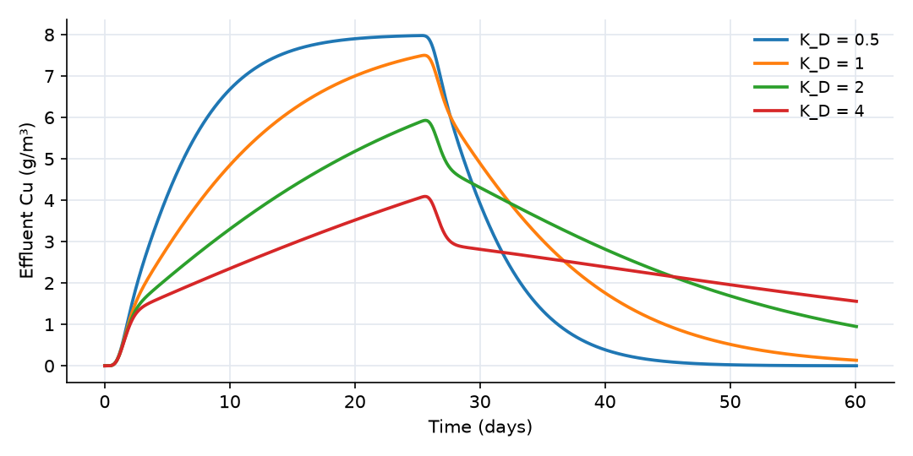
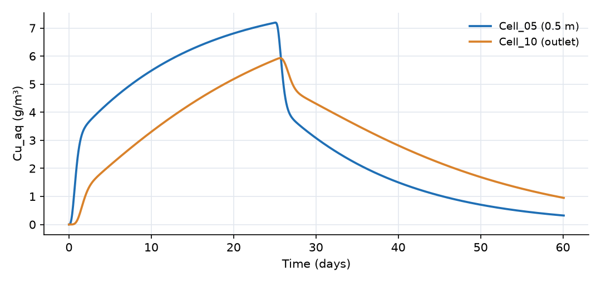
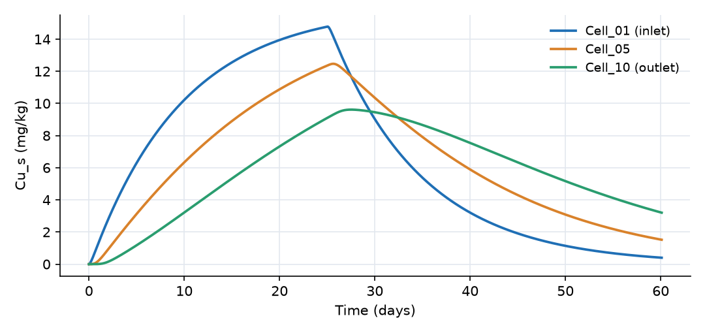

What this model represents
Every OpenHydroQual model is saved as a plain-text .ohq file, and that file is a script: each line is a command that the program executes in order to build the model. The same file can be opened in the graphical interface or run without it by the console solver OpenHydroQual-Console. Because the format is text, any language can write, edit and run models. This is how batch runs, parameter sweeps, scenario studies and post-processing are automated.
The example has three parts:
column.ohq, a 1 m soil column through which a 25-day copper pulse passes, with kinetic sorption (the same column as the genetic algorithm example, which documents its physics in detail).- A reference for the script commands, taken from the parser in the OpenHydroQual source (
aquifolium/src/Command.cppandScript.cpp). sweep.py, a Python script that runs the column for four values of the distribution coefficient K_D and plots the effluent curves.
The column is adapted from a script-built column model in the OpenHydroQual example collection (Script.ohq), rebuilt at 1 m² cross-section with ten cells.
How it works
The script language
A command line has the form
keyword [argument]; property=value, property=value, ...
The text before the first ; is the keyword and, for create and write, one argument. Everything after it is a list of property=value pairs separated by commas. The parser splits on ;, , and = without regard to brackets, so a value cannot contain any of those three characters. Write keywords in lower case. Lines are executed in order, so an object must be created before a later line refers to it.
| Command | Required properties | What it does |
|---|---|---|
loadtemplate; filename=main_components.json |
filename | Clears the model and loads the main template (the definitions of every object type and property). A bare file name is looked up in the resources folder. |
addtemplate; filename=<plugin>.json |
filename | Adds a plugin's object types, for example groundwater.json or mass_transfer.json. |
create block; type=..., name=..., ... |
name, type | Creates a block and sets the listed properties. |
create link; type=..., name=..., from=..., to=..., ... |
name, type, from, to | Creates a link from one block to another. If the name is taken, the link is renamed. |
create source; type=..., name=... |
name, type | Creates a source (rainfall, evaporation, loads), which blocks then refer to by name. |
create constituent; type=..., name=... |
name | Creates a constituent; it becomes a property set (Cu_aq:concentration, ...) on every block and link. |
create reaction_parameter; type=..., name=... |
name | Creates a named coefficient for rate expressions. |
create reaction; type=Reaction, name=..., rate_expression=..., <constituent>:stoichiometric_constant=... |
name | Creates a reaction. |
create composite; type=..., name=... |
name, type | Creates a composite block (a pre-assembled group). |
create observation; type=Observation, name=..., object=..., expression=... |
name, object, expression | Records an expression evaluated on a block or link, and compares it with observed_data if given. |
create parameter; type=Parameter, name=..., low=..., high=..., value=... |
name, low, high | Creates a calibration parameter. |
create objectivefunction; name=..., object=..., expression=... |
name, object, expression | Creates an objective function for optimization. |
setasparameter; object=..., quantity=..., parametername=... |
all three | Binds a model property to a calibration parameter. |
setvalue; object=..., quantity=..., value=... |
all three | Sets one property. object=system addresses the settings (simulation times, solver, GA, MCMC); object=LM the Levenberg-Marquardt settings; any other name is looked up among blocks, links, sources, constituents, reaction parameters, reactions, observations, parameters and objective functions. |
echo; object=...[, quantity=...] |
object | Prints the object, or one of its properties, to the console. |
write outputs; filename=... / write errors; filename=... |
filename | Writes the current results or the error list. |
solve, optimize |
Run the model or the genetic algorithm at that point in the script. |
Every type must be defined in a loaded template, otherwise the line fails with "Type ... does not exist". Values may carry a unit in brackets, as the interface writes them (Storage=10[m~^3]); in the files tested for these examples the number was used as written, without unit conversion, so give numbers in the model's base units (m, m³, days, g/m³). The models on this site use only loadtemplate, addtemplate, create, setvalue and setasparameter. solve and optimize are not needed in a file meant for the console, which builds the model and then solves it once by itself.
column.ohq contains, in this order: the two template lines, the two constituents, four reaction parameters, two reactions, eleven blocks, ten links and the settings. Its system settings include max_timestep_increase_factor = 1, which holds the step at 0.05 day. With the default the step grows to 2.5 days, and the implicit time stepping then smooths the effluent curve: late in the tail the computed concentration is up to 15% higher.
The console solver
OpenHydroQual-Console column.ohq -r /path/to/OpenHydroQual/resources -q -o output.txt
| Option | Meaning |
|---|---|
-r, --resources <dir> |
Folder with the template files. Default: $OHQ_RESOURCES, then a path relative to the executable. |
-o, --outputfile <name> |
Name of the results file, overriding the model's alloutputfile. |
-w, --workdir <dir> |
Folder against which relative input file names are resolved and outputs are written. Default: the folder of the .ohq file. |
-q, --quiet |
No per-step progress output. |
--skip-verify |
Skip the check of every property against the limits declared in the templates (not recommended). |
The console reads the script, stops with exit code 4 if any line failed (a missing input file, an unknown type or property) or if a property violates its declared limits, solves, and writes the results. If the model defines calibration parameters, their value fields are applied before the run. Observations with observed data are scored and their fit (MSE, R², NSE, −ln L) is printed. Exit codes: 0 success, 2 usage error, 3 model file not found, 4 model errors, 5 solve failed. A script should always check the exit code.
The results file has one pair of columns per output, t, Cell_10_Cu_aq:concentration, t, Cell_10_Cu_s:concentration, ...: a block or link property is named <object>_<property>, a constituent property <object>_<constituent>:<property>. All series are resampled to a common time grid.
The Python script
sweep.py uses only the standard library and matplotlib. It never edits the original files. For each value it:
- creates a folder
runs/K_D_<value>/and copiescolumn.ohq,inflow.txtandinflow_concentration.txtinto it; - appends one line to the copy,
setvalue; object=K_D, quantity=base_value, value=<value>. Because commands run in order, this overrides the value set by the earliercreate reaction_parameterline; - runs
OpenHydroQual-Console <copy> -q -o output.txtwithsubprocessand stops with a message if the exit code is not 0; - reads
output.txtand extracts the requested column.
python3 sweep.py --console /path/to/OpenHydroQual-Console --resources /path/to/OpenHydroQual/resources
python3 sweep.py --object k_f --quantity base_value --values 0.1 1 10 # vary another property
python3 sweep.py --series Cell_05_Cu_aq:concentration # plot another output
The options --object, --quantity and --values choose what is varied, so the same script sweeps any property of any named object: a block's area, a link's flow, a constituent's dispersivity. The solver's messages for each run are kept in console.log in its run folder. The script also writes sweep_summary.csv with the time at which the effluent first reaches half the inflow concentration and the peak concentration of each run.
Running the solver as a separate process keeps the Python side simple and lets independent runs execute in parallel (for example with concurrent.futures.ProcessPoolExecutor). The OpenHydroQual source also contains Python bindings (PythonBindings/, built with pybind11 against the OpenHydroQual library) that create blocks and links, set values, solve and save models from within Python. They are not part of the binary distribution and must be compiled with Qt and Armadillo; this example does not use them.
What to look for in the results

| K_D (L/kg) | Retardation factor R = 1 + ρ_b·K_D/n | Equilibrium front arrival R × 2 days | Effluent first reaches 4 g/m³ | Peak (g/m³) |
|---|---|---|---|---|
| 0.5 | 3 | 6 days | 4.9 days | 7.98 |
| 1 | 5 | 10 days | 7.7 days | 7.50 |
| 2 | 9 | 18 days | 13.3 days | 5.93 |
| 4 | 17 | 34 days | 24.6 days | 4.09 |
The four runs took about 15 s in total.
- Retardation. The arrival time grows with K_D, because sorbed copper must be supplied before the front can advance. For instantaneous (equilibrium) sorption the centre of the front would arrive after R pore volumes, R × 2 days.
- Kinetic sorption shortens it. With k_f = 1 1/day sorption is not instantaneous, so every run shows an early rise within the first pore volume (about 2 days), and half the inflow concentration is reached before the equilibrium arrival time. The stronger the sorption, the larger the difference: for K_D = 4 L/kg the effluent reaches 4 g/m³ ten days early, and the 25-day pulse never brings it near 8 g/m³.
- Tails. After day 25, strongly sorbing soils release copper slowly. At day 60 the effluent is still 1.6 g/m³ for K_D = 4 L/kg but nearly zero for K_D = 0.5 L/kg. The order of the curves reverses: the soil that retained the most copper during the pulse releases the most afterwards.
Assumptions and limitations
- The physics is that of the genetic algorithm example: steady saturated flow, linear kinetic sorption with one site type, and numerical dispersion from ten mixed cells.
- The sweep changes one property at a time. Appending several
setvaluelines per run, or generating them from a table, extends it to multi-parameter designs; each run is independent. sweep.pyassumes the console writes a complete results file. A run that fails stops the sweep, with the console's messages in that run'sconsole.log.- The Levenberg-Marquardt documentation describes an
lmoptimizescript command. In the console build used here, a linelmoptimizeis rejected with "Keyword 'lmoptimize' is not recognized"; use theOHQ-LMprogram for headless LM calibration.
Model diagram
Hover a block or link to see its name and type. Arrows show the positive flow direction.
Components
Click a component to see every property set in the model file, with units and meaning.
Blocks 11
Storage compartments: each holds water (and dissolved or particulate mass) and has a state that evolves in time.
Cell_01Groundwater cell · groundwaterFirst of ten Groundwater cells, each 0.1 m thick with 1 m² cross-section and porosity 0.4 (0.04 m³ of pore water). It receives the inflow of 0.2 m³/day and the copper inflow concentration from inflow_concentration.txt.
Groundwater cell: Groundwater cell
| Property | Value | Unit | Meaning |
|---|---|---|---|
| Cu_aq: Concentration | 0 | g/m3 | Computed as mass/(Storage+0.00001) |
| Cu_aq: Time Variable Inflow concentration | inflow_concentration.txt | g/m^3 | |
| Cu_s: Concentration per total volume | 0 | g/m3 | Computed as mass/(Storage+0.00001) |
| Cell area | 1.0 | m2 | |
| Bottom Elevation | -0.10 | m | Elevation of the bottom of the groundwater cell, used to determine hydraulic gradients and head. |
| Cell Depth | 0.1 | m | |
| Hydraulic Conductivity | 1 | m/day | Rate at which water can move through pore spaces or fractures in the subsurface. Influences groundwater flow velocity. |
| Inflow time series | inflow.txt | m^3/day | Time series representing external water input to the groundwater cell, such as recharge from precipitation or surface water. |
| Initial Moisture Content | 0.4 | Computed as Storage/(depth*area) | |
| Porosity | 0.4 | The fraction of the total volume of the subsurface that is occupied by voids or pores, representing storage capacity. | |
| Specific Storage | 0.01 | 1/m | Volume of water released per unit volume of aquifer per unit change in head. Reflects aquifer compressibility. |
9 × Groundwater cellGroundwater cell · groundwaterThe ten cells Cell_01 to Cell_10 that make up the 1 m soil column, numbered from the inlet. Each holds dissolved (Cu_aq) and sorbed (Cu_s) copper.
Cell_02, Cell_03, Cell_04, Cell_05, Cell_06, Cell_07, Cell_08, Cell_09 …
Showing properties of Cell_02.
Groundwater cell: Groundwater cell
| Property | Value | Unit | Meaning |
|---|---|---|---|
| Cu_aq: Concentration | 0 | g/m3 | Computed as mass/(Storage+0.00001) |
| Cu_s: Concentration per total volume | 0 | g/m3 | Computed as mass/(Storage+0.00001) |
| Cell area | 1.0 | m2 | |
| Bottom Elevation | -0.20 | m | Elevation of the bottom of the groundwater cell, used to determine hydraulic gradients and head. |
| Cell Depth | 0.1 | m | |
| Hydraulic Conductivity | 1 | m/day | Rate at which water can move through pore spaces or fractures in the subsurface. Influences groundwater flow velocity. |
| Initial Moisture Content | 0.4 | Computed as Storage/(depth*area) | |
| Porosity | 0.4 | The fraction of the total volume of the subsurface that is occupied by voids or pores, representing storage capacity. | |
| Specific Storage | 0.01 | 1/m | Volume of water released per unit volume of aquifer per unit change in head. Reflects aquifer compressibility. |
Effluent_CollectorReactor · mass_transferA 1000 m³ Reactor block that receives the column effluent.
Reactor: Reactor
| Property | Value | Unit | Meaning |
|---|---|---|---|
| Cu_aq: Concentration | 0 | g/m3 | Computed as mass/(Storage+0.00001) |
| Cu_s: Concentration per total volume | 0 | g/m3 | Computed as mass/(Storage+0.00001) |
| Initial Storage | 1000 | m3 | |
| Bottom elevation | -2 | m | |
| Constant Inflow | 0 | m3/day |
Links 10
Connections that move water (and the mass it carries) between blocks.
10 × Fixed flowFixed flow · mass_transferThe links Flow_01_02 to Flow_09_10 and Outlet, each carrying 0.2 m³/day downward through the column (positive from the upstream to the downstream cell).
Flow_01_02, Flow_02_03, Flow_03_04, Flow_04_05, Flow_05_06, Flow_06_07, Flow_07_08, Flow_08_09 …
Showing properties of Flow_01_02.
Fixed flow: Fixed flow
| Property | Value | Unit | Meaning |
|---|---|---|---|
| Flow rate | 0.2 | m3/day |
Constituents 2
Substances or particles carried by the water.
Cu_aqConstituentDissolved copper (g/m³), carried by the flow.
Constituent: Chemical constituent
| Property | Value | Unit | Meaning |
|---|---|---|---|
| Concentration | 0 | g/m3 | Computed as mass/(Storage+0.00001) |
| Constant Inflow concentration | 0 | g/m3 | |
| Diffusion Coefficient | 0 | m2/s | |
| Dispersivity | 0 | m | |
| Stoichiometric Constant | 0 |
Cu_sImmobile_Constituent · mass_transferSorbed copper (mg/kg of soil), an Immobile_Constituent that stays in its cell.
Immobile_Constituent: Immobile constituent
| Property | Value | Unit | Meaning |
|---|---|---|---|
| Concentration per total volume | 0 | g/m3 | Computed as mass/(Storage+0.00001) |
| Stoichiometric Constant | 0 |
Reaction parameters 4
Named coefficients used in reaction rate expressions.
k_fReactionParameterSorption rate constant, 1 1/day.
ReactionParameter: Reaction Parameter
| Property | Value | Unit | Meaning |
|---|---|---|---|
| Arrhenius temperature correction factor | 1 | ||
| Value | 1.0 | ||
| Reference Temperature | 20 |
K_DReactionParameterLinear distribution coefficient (L/kg), 2 in the file. This is the value the Python script varies.
ReactionParameter: Reaction Parameter
| Property | Value | Unit | Meaning |
|---|---|---|---|
| Arrhenius temperature correction factor | 1 | ||
| Value | 2.0 | ||
| Reference Temperature | 20 |
rho_bReactionParameterDry bulk density, 1.6 kg/L.
ReactionParameter: Reaction Parameter
| Property | Value | Unit | Meaning |
|---|---|---|---|
| Arrhenius temperature correction factor | 1 | ||
| Value | 1.6 | ||
| Reference Temperature | 20 |
porosityReactionParameterPorosity used in the stoichiometric factor, 0.4.
ReactionParameter: Reaction Parameter
| Property | Value | Unit | Meaning |
|---|---|---|---|
| Arrhenius temperature correction factor | 1 | ||
| Value | 0.4 | ||
| Reference Temperature | 20 |
Reactions 2
Transformations among constituents, each with a stoichiometry and a rate expression.
AdsorptionReactionTransfer from water to soil, rate k_f·Cu_aq, coefficients −1 for Cu_aq and +porosity/rho_b for Cu_s.
Reaction: Chemical reaction
(k_f*Cu_aq)| Constituent | Stoichiometric coefficient |
|---|---|
| Cu_aq | -1 |
| Cu_s | (porosity/rho_b) |
DesorptionReactionTransfer from soil to water, rate (k_f/K_D)·Cu_s, coefficients +1 for Cu_aq and −porosity/rho_b for Cu_s.
Reaction: Chemical reaction
(k_f/K_D*Cu_s)| Constituent | Stoichiometric coefficient |
|---|---|
| Cu_aq | 1 |
| Cu_s | (0-porosity/rho_b) |
Input files
inflow_concentration.txt | Copper concentration of the inflow (g/m³) versus time (days). 8 g/m³ from day 0 to day 25, then clean water. |
inflow.txt | Water inflow to the top of the column (m³/day) versus time (days), constant 0.2 m³/day. |
sweep.py | Python 3 script (needs matplotlib). For each value of a chosen property it copies the model into its own folder, appends a setvalue command, runs OpenHydroQual-Console, reads the output and plots one series per run. Writes sweep.png and sweep_summary.csv. |
Simulation settings
| Start time | 0 |
| End time | 60 |
| Initial time step | 0.05 |
| Write interval (steps) | 100 |
| Newton-Raphson tolerance | 1e-06 |
Results
Produced by running the downloaded model unchanged.

